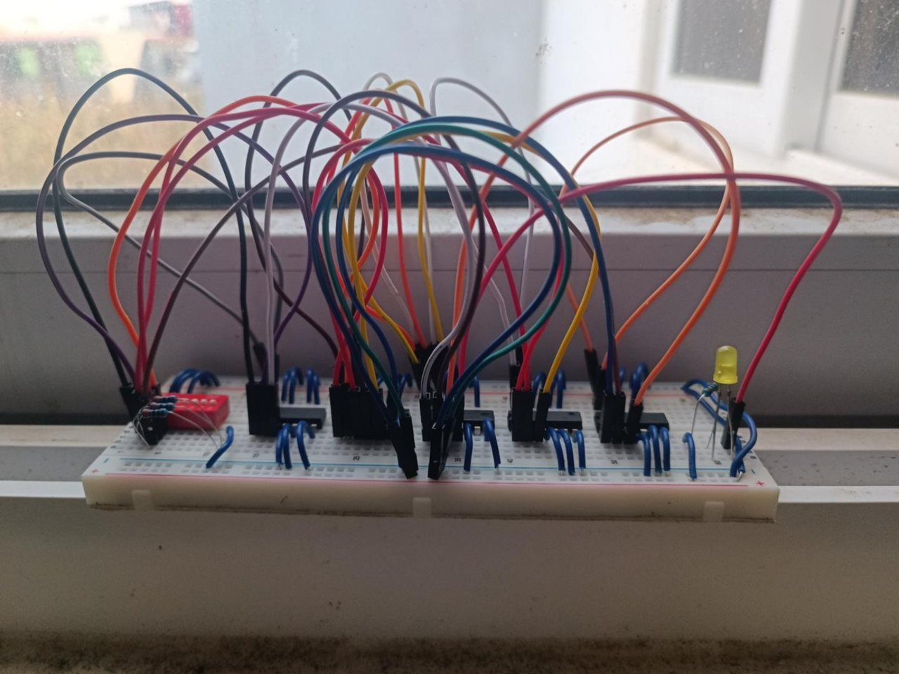

P
·
ProtoLab
Oliver Robles
USAC · CUNOC
MATEMÁTICA PARA COMPUTACIÓN I
Del circuito
a la lógica.
A · B · C
000
Montaje real
Protoboard
Compuertas
SIMULACIÓN

Ampliar ↗
MONTAJE REAL
5 integrados · 6 compuertas
Vista
Con jumpers
Conexiones
Acercar
Todo
DIP
Integrados
U1 · AND
U2 · OR
U3 · NOT
U4 · NAND
U5 · XOR
LED
Todos los cables
PROTOBOARD
74LS · 5 V
SEÑALES EN VIVO
AND → OR → NOT → NAND → OR → XOR
×